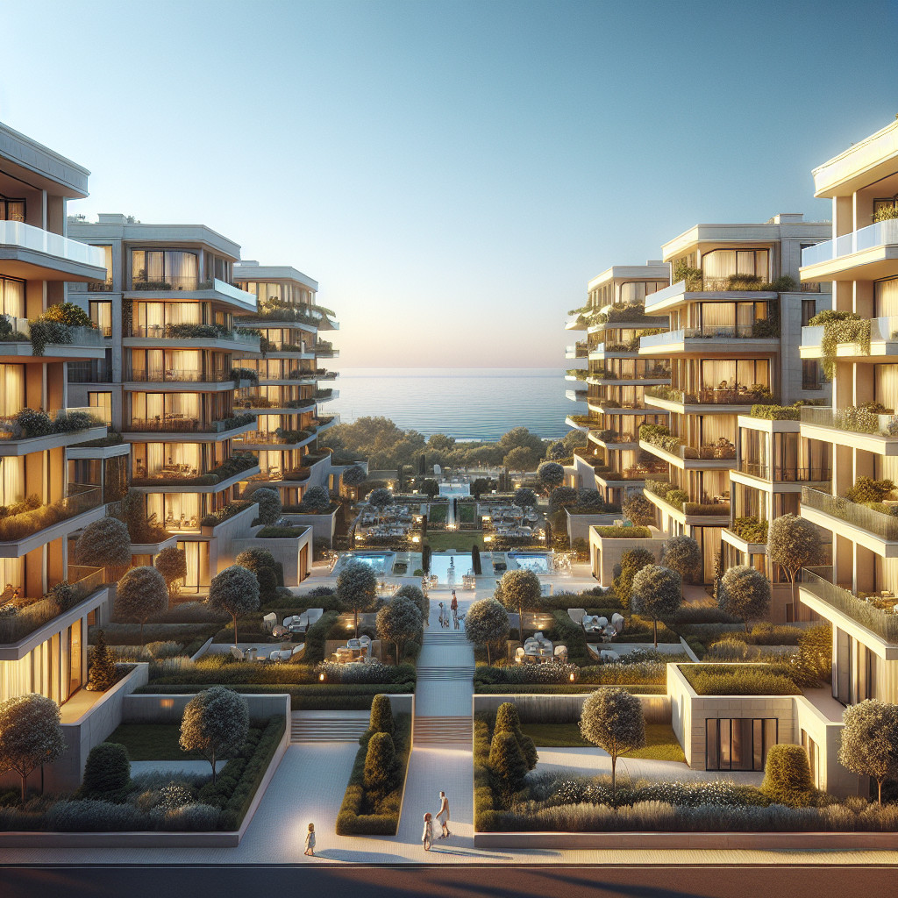

Когда входить в объект и когда выходить из него: как выбрать тайминг сделки в Крыму
Входить разумно, когда понятны цель покупки, горизонт владения, полная стоимость входа и подтверждена ликвидность конкретного объекта. Выходить стоит, когда объект перестает соответствовать вашей цели, растут издержки владения или усложняется будущая продажа. Сезон, новости и ожидание «лучшего момента» не заменяют проверку документов, аналогов, срока экспозиции и сценария выхода. Если данных по ликвидности, расходам и документам недостаточно, безопаснее сначала собрать факты, а не угадывать рынок.
От чего на самом деле зависит тайминг сделки в Крыму
Решение о входе и выходе зависит не от абстрактного рынка, а от цели, срока владения и параметров конкретного объекта. Одно дело покупать квартиру для жизни на 10-15 лет, другое дело — искать объект для перепродажи через 2-3 года. Разные цели требуют разной логики.
Для жизни важны комфорт, инфраструктура и стабильность расходов на содержание. Для перепродажи критичны ликвидность, понятность формата для будущих покупателей и минимизация транзакционных издержек. Для смены формата жилья ключевой становится скорость выхода из текущего объекта и готовность нового к заселению.
Горизонт владения меняет требования к ликвидности и допустимым рискам. При владении 1-2 года транзакционные расходы съедают значительную часть потенциальной выгоды. При владении 5-10 лет можно позволить себе менее ликвидные форматы, но важнее становится прогноз по содержанию и обслуживанию.
Сценарий выхода лучше определить еще до покупки. Кому и в каком состоянии вы планируете продать объект? Семье для жизни, инвестору под аренду, покупателю готового бизнеса? От этого зависят требования к планировке, отделке, документам и локации.
Когда входить в объект: признаки, что покупка своевременна именно для вас
Покупка своевременна, когда выполнены базовые условия готовности к сделке. Цель покупки и срок владения определены заранее — не «вообще хочу недвижимость», а конкретная задача с понятным горизонтом. Будущий сценарий выхода ясен: вы понимаете, кому и в каком состоянии объект можно будет продать.
Объект проходит проверку по ликвидности в своем сегменте. Локация, формат, площадь, состояние и документы соответствуют спросу среди покупателей, которые рассматривают такие варианты. Использование объекта понятно не только вам, но и будущему покупателю.
Полная стоимость входа просчитана реалистично: оформление сделки, ремонт или доработки, комплектация мебелью и техникой, запуск эксплуатации. Часто на этом этапе выясняется, что «выгодная» цена покупки превращается в серьезные дополнительные вложения.
Что нужно проверить перед входом:
- Спрос на сопоставимые лоты в том же сегменте и локации
- Срок экспозиции похожих объектов на рынке
- Историю объявлений: как часто перевыставляются и снижают цену
- Правоустанавливающие документы и сведения об обременениях
- Техническую документацию и соответствие заявленным характеристикам
- Подтверждение текущих расходов на содержание и обслуживание
Эти данные помогают принять решение на фактах, а не на предположениях о рынке. Если информации недостаточно, стоит сначала собрать недостающие сведения.
Когда с покупкой лучше не спешить: красные флаги и ошибки тайминга
Пауза полезнее быстрой сделки, когда базовые условия не выполнены. Нет ясной цели покупки или срок владения не определен — решение строится на эмоциях или общих рассуждениях о рынке. Такой подход часто приводит к разочарованию через несколько месяцев.
Решение строится на ожидании быстрой перепродажи без проверки реальной ликвидности. «Купить дешево, продать дорого» звучит просто, но требует подтверждения спроса именно на этот тип объектов в этой локации.
Статус объекта, земли, помещения или обременений неясен. Проблемы с документами могут заблокировать не только продажу, но и нормальное использование недвижимости. Будущие расходы на ремонт, содержание и доработки не оценены или оценены поверхностно.
Объект выглядит переоцененным по сравнению с сопоставимыми предложениями. Если аналогичные варианты стоят заметно дешевле, стоит понять, чем обусловлена разница в цене.
Типичные ошибки тайминга:
- Ориентир на эмоции от объекта вместо проверки его соответствия цели
- Решение под влиянием общего информационного фона и новостей
- Сравнение с несопоставимыми объявлениями из других сегментов
- Недооценка времени и средств на подготовку объекта к использованию
- Игнорирование альтернативных вариантов решения той же задачи
Если есть сомнения по любому из этих пунктов, разумнее сначала получить недостающую информацию, чем принимать решение в условиях неопределенности.
Когда выходить из объекта: практические сигналы к продаже
Выход из объекта — это осознанное управленческое решение, основанное на изменении обстоятельств или появлении более подходящих альтернатив. Объект перестал соответствовать текущей цели собственника: изменились потребности в площади, локации, формате использования или горизонте владения.
Расходы на владение становятся чувствительными для текущего сценария. Коммунальные платежи, обслуживание, налоги, простои, обновление или ремонт требуют средств, которые можно использовать более эффективно. Особенно актуально для объектов, которые не используются постоянно.
Появился более подходящий способ использования капитала или другой формат недвижимости. Возможно, изменились семейные обстоятельства, работа, доходы или приоритеты в размещении средств.
Ликвидность объекта пока сохраняется, но есть факторы, которые могут затруднить продажу позже: изменения в инфраструктуре, появление конкурирующих предложений, износ без обновления, усложнение документооборота.
Что проверить перед выходом:
- Срок экспозиции похожих объектов в текущих условиях
- Активность спроса в вашем сегменте и ценовом диапазоне
- Частоту снижения цены у конкурентов и причины затяжных продаж
- Актуальность пакета документов и отсутствие задолженностей
- Готовность объекта к показам и быстрому оформлению сделки
- Затраты на продажу: комиссии, подготовка, реклама, юридическое сопровождение
Эти данные помогают выбрать оптимальный момент выхода и подготовиться к продаже заранее, а не в срочном порядке.
Как оценить ликвидность объекта перед входом и перед выходом из него
Ликвидность — это совокупность факторов, которые делают объект понятным и привлекательным для покупателей в вашем сегменте. Локация, планировка, площадь, состояние, документы и сценарий использования должны соответствовать ожиданиям целевой аудитории.
Сравнивать нужно только с аналогичными предложениями по сегменту, формату и ценовому диапазону. Квартиры с квартирами, дома с домами, коммерческие помещения с коммерческими. Сравнение разных типов недвижимости не дает полезной информации для принятия решения.
Признаки для оценки ликвидности:
- Количество похожих лотов на рынке в данный момент
- Средний срок размещения объявлений в вашем сегменте
- Частота перевыставления одних и тех же объектов
- Динамика снижения цены у конкурентов
- Готовность продавцов к показам и переговорам
- Скорость реакции на запросы потенциальных покупателей
Срок экспозиции и поведение конкурентов показывают реальную ситуацию со спросом без рыночных обобщений. Если похожие объекты продаются месяцами, регулярно снижают цену или перевыставляются, это сигнал о проблемах с ликвидностью в данном сегменте.
Что запросить и собрать для проверки:
- Подборку аналогов с указанием срока размещения
- Историю объявлений по интересующему объекту
- Документы, подтверждающие заявленные характеристики
- Информацию о юридической истории и обременениях
- Данные о расходах на содержание и эксплуатацию
Эта информация дает объективную картину для принятия решения о входе или выходе из конкретного объекта.
Новостройка и вторичный рынок: чем отличается решение по таймингу
Для новостройки критично различать этапы: выбор проекта, подписание договора, готовность объекта и фактическая возможность использования. Каждый этап имеет свои риски и требования к документам. Важно отдельно проверять стадию готовности, комплект документов и реалистичность заявленных условий передачи.
При входе в новостройку нужно оценивать не только цену, но и готовность застройщика выполнить обязательства в срок. Репутация компании, история сданных объектов, финансовая устойчивость и прозрачность отчетности влияют на риски покупателя.
При выходе из новостройки важна готовность объекта к продаже после получения. Черновая отделка, отсутствие мебели и техники, неразвитая инфраструктура могут затруднить поиск покупателя. Часто требуются дополнительные вложения в приведение объекта к продаваемому виду.
Для вторичного рынка ключевы юридическая история, техническое состояние и скорость выхода на сделку. Объект уже существует, его можно осмотреть, проверить документы и оценить реальное состояние. Риски связаны с износом, скрытыми дефектами и возможными обременениями.
При входе на вторичный рынок можно быстрее завершить сделку и начать использование. При выходе важно честно оценить техническое состояние и привести объект в презентабельный вид для показов.
Одинаковый календарный момент может быть подходящим для покупки готовой квартиры на вторичном рынке и неподходящим для вложения в строящийся объект, если нет уверенности в сроках сдачи.
Какие расходы и риски чаще всего ломают логику тайминга
Ошибки тайминга часто связаны не с неудачным выбором момента на рынке, а с недоучтенными затратами и слабо проверенными рисками. Расходы на оформление сделки, ремонт, меблировку, содержание, налоги и подготовку к продаже могут существенно изменить экономику владения.
Короткий горизонт владения делает транзакционные издержки особенно значимыми. Если планируете продать объект через 1-2 года, расходы на покупку, доработку и продажу могут составить 15-25% от стоимости объекта. Это нужно учитывать при оценке целесообразности сделки.
Риск покупки объекта, который требует больше вложений, чем ожидалось. Скрытые дефекты, несоответствие документов реальности, необходимость согласований и доработок могут увеличить стоимость входа в разы.
Риск продажи неподготовленного объекта создает дополнительные сложности. Покупатели ожидают увидеть недвижимость в презентабельном состоянии с полным комплектом документов. Продажа «как есть» обычно означает существенную скидку к рыночной цене.
Основные категории недоучтенных расходов:
- Оформление: госпошлины, нотариус, регистрация, страхование
- Приведение в порядок: ремонт, мебель, техника, подключения
- Содержание: коммунальные, управление, налоги, страхование
- Простои: периоды без использования или арендаторов
- Продажа: реклама, комиссии, юридическое сопровождение, скидки
Когда выводы о целесообразности сделки стоит отложить до получения данных от профильных специалистов: оценщиков, юристов, технических экспертов, риелторов с опытом работы в конкретном сегменте.
Пошаговый чеклист: входить, подождать, выходить или сначала подготовить объект
Практический алгоритм принятия решения по конкретному объекту поможет избежать импульсивных решений и учесть все значимые факторы. Начните с определения цели покупки или продажи и горизонта владения. Четкое понимание задачи упрощает все последующие шаги.
Проверьте ликвидность похожих объектов в том же сегменте и локации. Сколько времени продаются аналогичные варианты? Как часто снижают цену? Есть ли стабильный спрос или рынок перенасыщен предложениями?
Сравните объект с сопоставимыми предложениями по площади, состоянию, локации и характеристикам. Избегайте сравнения с объектами из других сегментов или с уникальными особенностями.
Запросите правоустанавливающие документы и проверьте наличие обременений. Убедитесь, что продавец имеет право распоряжаться объектом, а покупатель сможет зарегистрировать право собственности без препятствий.
Проверьте техническое состояние объекта и оцените возможные будущие вложения. Что потребует ремонта или замены в ближайшие годы? Какие согласования могут понадобиться?
Оцените полную стоимость входа: оформление сделки, ремонт, комплектация, подключение коммуникаций, запуск эксплуатации. Сложите все статьи расходов для реалистичной картины.
Рассчитайте расходы на владение: коммунальные платежи, обслуживание общих площадей, налоги, страхование, периодические простои. Умножьте на планируемый срок владения.
Определите сценарий выхода еще до покупки: кому и в каком состоянии объект будет продаваться. Семье для жизни, инвестору, покупателю готового бизнеса? От этого зависят требования к подготовке.
Перед продажей соберите актуальный пакет документов и подтвердите отсутствие задолженностей по коммунальным платежам, налогам и сборам. Покупатели проверяют эти моменты при оформлении сделки.
Проверьте, сколько времени продаются похожие объекты в текущих условиях и как часто по ним снижают цену. Это поможет установить реалистичную цену и срок продажи.
Оцените готовность объекта к продаже: визуальное состояние, техническая исправность, полнота документов, удобство показов потенциальным покупателям.
Сравните текущее решение с альтернативами: купить сейчас, подождать более подходящего предложения, продать в текущем состоянии или сначала подготовить объект к продаже.
Этот алгоритм помогает принимать решения на основе фактов, а не предположений о рынке или эмоциональных реакций на конкретные объекты.
Сценарные расчеты доходности: ориентировочные цифры для планирования
Для понимания экономики владения недвижимостью в Крыму рассмотрим базовые сценарии на примере объекта стоимостью 9 000 000 рублей. Расчеты носят ориентировочный характер и зависят от конкретной локации, состояния объекта и сезонности спроса.
Консервативный сценарий предполагает аренду 6 месяцев в году по 80 000 рублей в месяц. Валовый доход составит 480 000 рублей. Операционные расходы: коммунальные услуги (60 000), управление и обслуживание (40 000), налоги (20 000), ремонт и обновление (30 000), простои и реклама (20 000). Итого расходов: 170 000 рублей. Чистый доход: 310 000 рублей. Ориентировочная доходность: 3,4% годовых.
Базовый сценарий: аренда 8 месяцев по 90 000 рублей в месяц. Валовый доход: 720 000 рублей. Операционные расходы остаются на том же уровне: 170 000 рублей. Чистый доход: 550 000 рублей. Ориентировочная доходность: 6,1% годовых.
Оптимистичный сценарий: аренда 10 месяцев по 100 000 рублей в месяц при высоком спросе и удачной локации. Валовый доход: 1 000 000 рублей. Расходы могут увеличиться до 200 000 рублей за счет более интенсивного использования. Чистый доход: 800 000 рублей. Ориентировочная доходность: 8,9% годовых.
Важно понимать, что эти расчеты не учитывают первоначальные вложения в ремонт и обстановку, которые могут составить 10-20% от стоимости объекта. Также не включены расходы на покупку и возможную продажу.
Данные по арендным ставкам взяты из открытых источников и могут существенно различаться в зависимости от района, близости к морю, состояния объекта и сезона. Операционные расходы также требуют уточнения для конкретного объекта и формата использования.
Расчет не является финансовой рекомендацией и требует верификации всех входных параметров перед принятием инвестиционного решения. Реальная доходность зависит от множества факторов, которые невозможно предсказать заранее.
FAQ
Когда понятны цель покупки, срок владения, полные расходы и подтверждена ликвидность именно этого объекта по аналогам и документам.
Когда объект перестает соответствовать вашей задаче, растут издержки владения или продажа может стать сложнее при дальнейшем ожидании.
Обычно важнее параметры конкретного объекта: документы, состояние, ликвидность, сопоставимые предложения и готовность к продаже или покупке.
Сравнить объект с аналогичными лотами, посмотреть срок экспозиции, частоту снижения цены, историю объявлений и спрос в вашем сегменте.
Чаще всего недооценивают оформление, ремонт, комплектацию, содержание, налоги, простои и подготовку объекта к продаже.
В новостройке критичны стадия готовности и комплект документов, а на вторичном рынке — юридическая история, состояние объекта и скорость выхода на сделку.